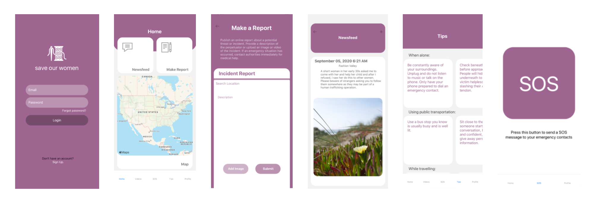

presidential bias predictor
Top 5 Course Projects
Project Date: December 2020
Technologies: Python, Unofficial TikTok API, Porter Stemmer Algorithm, Gaussian Classifier, Naive Bayes Algorithm, Google Colab
Role: Data Wrangling, Datasets, API Handle
Team: Elias Arghand, Elias Fang, Norman Ta, Wesley Wang, Vivian Wu
Can we create a classification model to predict the 2020 presidential bias of politically-focused TikTok videos?
Overview
TikTok, a social media platform that recently rose to fame around the world, has set the
stage for users to express their political ideologies in short videos with the recent 2020 Presidential Election. We
decided to gather data leveraging various political hashtags to see if we can predict the presidential bias of a
politically-focused TikTok video.
Through the predictive model, we generated with the data we scraped from the most popular TikTok videos, we were able to accurately predict the bias of any given TikTok video and also discovered that TikTok has a predominantly left demographic. The findings of our project has allowed us to better understand the role of machine learning in predictive analysis and our data can also be used to better understand the biases that exist in social media content.
Through the predictive model, we generated with the data we scraped from the most popular TikTok videos, we were able to accurately predict the bias of any given TikTok video and also discovered that TikTok has a predominantly left demographic. The findings of our project has allowed us to better understand the role of machine learning in predictive analysis and our data can also be used to better understand the biases that exist in social media content.
Background and Prior Work
The social media platform known as TIkTok is an app created by ByteDance Ltd. to cultivate
creativity among its users through short videos (known as TikToks) grouped by hashtags and genre. Since its
conception in September 2016, TikTok has risen in popularity around the world, especially among the younger
demographic aged 16-24 [1]. With the recent 2020 election, social media platforms witnessed a surge in
politically-related content. This year's election was the first election for TikTok since its rise to popularity and
so naturally, political TikTok videos consisting of activism and awareness began surfacing among its users [2]. This
makes sense as it is well known that social media has an influence on human beliefs and behaviors.
Through personal experience using the TikTok platform, we have seen how the app's system heavily relies on the use of hashtags. With the influx of political TikTok videos, we observed the specific hashtags that were used by creators posting these videos. Among these hashtags are election candidate names, party affiliation, and political ideology. It was interesting to see how we could anticipate the content of the video based on the hashtags being used. This was more difficult, however, when hashtags reflecting multiple parties were used. This led us to ask whether or not there was a way to accurately predict the content of TikTok videos based on their hashtags and video descriptions. With the presidential election overlapping a large section of the Fall 2020 quarter, we sought to answer this question more directly, as it pertained to that election. The more specific question we sought to answer was if the hashtag frequency, likes, view count, and other TikTok metrics could be used to predict the presidential bias of a TikTok during the election.
One past study we found on TikTok in the context of the election focused on TikTok's algorithm for suggesting content to its users. Jack Bandy, a PhD student studying AI, ethics, and media, discovered that unlike other platforms, which rely on "friends" and "followers" to suggest relevant content, TikTok's suggestion algorithm focuses primarily on popular videos chosen by all of its users [3]. With this in mind, we know that the popular political videos we are analyzing truly are popular among the primary user demographic of the platform. TikTok has no official API available for use to use, so to retrieve the necessary data to answer our research question, we use an Unofficial TikTok API developed by David Teather, a Computer Science student from Wisconsin [4]. With this, we are able to find the most popular TikTok videos related to the 2020 election and analyze their hashtags and descriptions.
References:
Through personal experience using the TikTok platform, we have seen how the app's system heavily relies on the use of hashtags. With the influx of political TikTok videos, we observed the specific hashtags that were used by creators posting these videos. Among these hashtags are election candidate names, party affiliation, and political ideology. It was interesting to see how we could anticipate the content of the video based on the hashtags being used. This was more difficult, however, when hashtags reflecting multiple parties were used. This led us to ask whether or not there was a way to accurately predict the content of TikTok videos based on their hashtags and video descriptions. With the presidential election overlapping a large section of the Fall 2020 quarter, we sought to answer this question more directly, as it pertained to that election. The more specific question we sought to answer was if the hashtag frequency, likes, view count, and other TikTok metrics could be used to predict the presidential bias of a TikTok during the election.
One past study we found on TikTok in the context of the election focused on TikTok's algorithm for suggesting content to its users. Jack Bandy, a PhD student studying AI, ethics, and media, discovered that unlike other platforms, which rely on "friends" and "followers" to suggest relevant content, TikTok's suggestion algorithm focuses primarily on popular videos chosen by all of its users [3]. With this in mind, we know that the popular political videos we are analyzing truly are popular among the primary user demographic of the platform. TikTok has no official API available for use to use, so to retrieve the necessary data to answer our research question, we use an Unofficial TikTok API developed by David Teather, a Computer Science student from Wisconsin [4]. With this, we are able to find the most popular TikTok videos related to the 2020 election and analyze their hashtags and descriptions.
References:
- [1] https://www.businessofapps.com/data/tik-tok-statistics/#:~:text=TikTok%20demographics,and%2025%2D34%20year%20olds
- [2] https://www.vogue.com/article/tiktok-activism-president-trump-rally
- [3] https://towardsdatascience.com/new-study-on-tiktoks-algorithms-and-trump-s-tulsa-rally-508ffb2a5ac5
- [4] https://github.com/davidteather/TikTok-Api
Hypothesis
We hypothesize that data fields of a TikTok, such as hashtags, descriptions, likes, and play
counts will greatly contribute to the sentiment of a TiKTok, allowing us to use those data fields in order to
generate a predictive model that uses data on hashtags in order to find the presidential bias of a given TikTok. We
believe that with this data, we will be able to leverage Machine Learning models such as the Gaussian Naive Bayes
model in order to predict whether or not the sentiment of the TikTok is Trump- or Biden-leaning relative to the 2020
Presidential Election. Note that the predictive model training is based on data surrounding presidential candidates
as the metric for left and right leaning TikToks, so the data is more specific to the presidential election.
A potential source of inaccuracy could come from the fact that the sentiment of a hashtag may not represent the
sentiment of the TikTok, as hashtags relate more directly to the topic rather than the sentiment on that topic.
Dataset(s)
For our datasets, we leveraged David Teather's Unofficial TikTok API, specifically the functionality to grab TikToks
based on a given hashtag. All of the TikToks we pull are from TikTok's official application. Given a number of
observations x, the API will pull the top x amount of TikToks of a hashtag and automatically sort them by like count in
descending order.
Dataset 1:
Dataset 1:
- Name: trump2020.json
- Link: https://raw.githubusercontent.com/COGS108/group030_fa20/master/data/trump2020.json?token=ANFVA7U6ERSAEKTRHLRCRSC74QEJC
- Number of Observations: 1000
- Description:
- Name: trump2020.json
- Link: https://raw.githubusercontent.com/COGS108/group030_fa20/master/data/biden2020.json?token=ANFVA7W5WO35OOUD6CHKKKS74QECK
- Number of Observations: 1000
- Description: This dataset includes the json file format of videos with the hashtag trump2020, video descriptions, other hashtags, like count, play count, and soundtrack. This dataset is used to determine our word frequencies and is used to determine our shift to a more extreme hashtag.
- Name: trump2020.json
- Link: https://raw.githubusercontent.com/COGS108/group030_fa20/master/data/bidenharris2020.json?token=ANFVA7X7LCP4BXNLKTAFXLK74QEDM
- Number of Observations: 1000
- Description: This dataset includes the json file format of videos with the hashtag bidenharris, video descriptions, other hashtags, like count, play count, and soundtrack. This dataset is used to help train our prediction model as it is more left-leaning/biden supporting.
- Name: trump2020.json
- Link: https://raw.githubusercontent.com/COGS108/group030_fa20/master/data/trumptrain2020.json?token=ANFVA7XLNGJLSD5R46F4OSK74QENI
- Number of Observations: 1000
- Description: This dataset includes the json file format of videos with the hashtag trumptrain, video descriptions, other hashtags, like count, play count, and soundtrack. This dataset is used to help train our prediction model as it is more right-leaning/trump supporting.
- Name: trump2020.json
- Link: https://raw.githubusercontent.com/COGS108/group030_fa20/master/data/president.json?token=ANFVA7VDOGZ6KG5AGIE67QS74QEIC
- Number of Observations: 500
- Description: This dataset includes the json file format of videos with the hashtag president, video descriptions, other hashtags, like count, play count, and soundtrack. This dataset is used to observe word frequencies and is part of our application. Further, this dataset represents a more middle ground hashtag to both sides of the presidential bias.
Setup
import numpy as np
import pandas as pd
import matplotlib.pyplot as plt
import string
import itertools
import json
from wordcloud import WordCloud
from nltk.stem import PorterStemmer
# Don't display too many rows/cols of DataFrames
pd.options.display.max_rows = 7
pd.options.display.max_columns = 8
# Round decimals when displaying DataFrames
pd.set_option('precision', 2)
import seaborn as sns
sns.set()
sns.set_context('talk')
# Import nltk package
# PennTreeBank word tokenizer
# English language stopwords
import nltk
from nltk.tokenize import word_tokenize
from nltk.corpus import stopwords
from nltk.probability import FreqDist
from nltk.stem import PorterStemmer
import warnings
warnings.filterwarnings('ignore')
# scikit-learn imports
# SVM (Support Vector Machine) classifer
# Vectorizer, which transforms text data into bag-of-words feature
# TF-IDF Vectorizer that first removes widely used words in the dataset and then transforms test data
# Metrics functions to evaluate performance
import re
from sklearn.svm import SVC
from sklearn.feature_extraction.text import CountVectorizer, TfidfVectorizer
from nltk.stem.porter import PorterStemmer
from nltk.corpus import stopwords
from sklearn.metrics import classification_report, precision_recall_fscore_support
from sklearn.model_selection import train_test_split
from sklearn.naive_bayes import GaussianNB
from sklearn.metrics import confusion_matrix
from sklearn.tree import DecisionTreeClassifier
from sklearn.ensemble import RandomForestClassifier
from sklearn import svm, datasets
from sklearn.model_selection import train_test_split
from sklearn.metrics import plot_confusion_matrix
nltk.download('punkt')
nltk.download('stopwords')
nltk.download('vader_lexicon')
stop_words = set(stopwords.words('english'))
Solution
Solution
Solution
Save Our Women - a Women's Safety App (iOS)
Inspired by recent events and increased media presence on women safety, this
iOS app aims to
promote the safety of women through awareness and action.
Features:
Features:
- Emergency SOS Messaging and Location Tracking to Emergency Contacts - with the tap of a button, send Emergency SOS messages to your Emergency Contacts with your location
- Creation of Incident Reports - create reports by pinpointing the location and description of an incident and share to others on the platform
- Live Map of Incidents - integrated maps with pinpoint locations and incident hotspots/clusters
- Scenario Based Audios and Tips - spread awareness and tips to ensure other women are well informed of recent issues and how they can keep themselves safe
User Research/Needfinding

These statistics derive from the 2019 data report for the
U.S National Human
Trafficking Hotline. As we understand that this
does not encompass the entirety of trafficking cases, the large numbers allowed us to judge that
this was an issue that needed to be addressed.

Further, through investigating local social media pages like @sdawareness on Instagram, we found that there was a lot of attention on the topic but stayed central to just self reflected stories. This made us want to build an app that encompassed various topics pertaining to spreading awareness, tips, and safety.
We also investigated other apps related to safety and found Indian SOS Women Safety and Sister, both of which had similar features. We used these two apps to draw inspiration from but also refine and bring uniqueness to our app. We liked the ideas of the SOS Emergency Alert, Location Sharing, and the Tips/Videos. We found that these were core features that needed to be implemented together in one application.
Use Cases
After deciding on what core functionalities we wanted in our app, we created a chart of
Use Cases that we wanted users to be able to do with our application. We prioritized our use cases with
green as highest priority,
yellow as medium priority,
and red as lowest priority.
This allowed us to set goals toward
finishing what is needed minimally.
Section 1: Login
Section 1: Login
- Users should be able to set up an account with the application
- Users should be able to log in and log out of their account
- Users should be able to access the homepage from the website
- User can opt in to push notifications of reported incidents
- User can send SOS emergency alerts and emergency contacts are notified
- User can report incidents of harassment in the specific area
- User can access other sections through a navigation bar
- Users should be able to play audios/videos on the app
- Users should be able to save favorites on the app
- Users should be able to upload audios/videos on the app
- User can put down emergency point of contacts
- User can view tips for how to stay safe + what to do when you run into a certain situation
- User can view safety of areas they’re currently in
UI Design
We used Figma to design our app's UI. Starting with the Mockup, we gauged
what elements we wanted on our screens and refined that to our Final.
Mockup

Our mockups consisted of several inconsistencies with the home button, navigation bar, and settings
button. Throuhgout our project timeline, we evolved our this into our Final design by deciding what we
minimally needed in our app and how to implement it as minimalistically and simple as possible - because
someone using the app may not have the time to dig through to find the SOS button in a dangerous
situation.
Final

Screen Descriptions
- Sign Up/Login - Sign Up or Login to the Save Our Women
- Home - Home directory, navigate to Newsfeed, Make a Report, or check out the Live Cluster Map
- Make a Report - Witness or experience an offense? Create a report with the location, picture (if applicable) and a description of what happened to spread awareness
- Newsfeed - View other reports of offense
- Tips - View the directory of tips and videos on what to do based on certain scenarios
- Emergency Contacts - Add your Emergency point of contacts
- Emergency SOS - Press the SOS button to send an alert with your current location to your Emergency Contacts!
Programming
For our front end, we used React Native and Google Places and Maps API. We
connected the front and back end through Axios.
I focused more on the back end, leveraging Python Flask as our back end server and Google Firebase as our database and authentication. I further implemented the Emergency SOS contact messaging through Twilio API and built Docker containers to allow front end to run the back end. To test my back end functionalities, I utilized Postman to parse my JSON strings, HTML, Javascript and Google Places and Maps API to test the basic layout.
I focused more on the back end, leveraging Python Flask as our back end server and Google Firebase as our database and authentication. I further implemented the Emergency SOS contact messaging through Twilio API and built Docker containers to allow front end to run the back end. To test my back end functionalities, I utilized Postman to parse my JSON strings, HTML, Javascript and Google Places and Maps API to test the basic layout.
Walkthrough
Below is a video demonstrating a simple walkthrough of our application and its key features:
Challenges we faced
Originally, we intended to use Google Maps and Places API in the back end
but we found many issues when connecting the front and back end, so we had to move it to be used
in the front end. Further, when we designed the app to be iOS, I was unable to test on my end
due to having a Windows, so I ended up testing the back end functionality without having access to
the front end and made basic HTML pages to test.
Reflection
Throughout this entire process, I learned to build an MVP given a 10 week
timeline. It was also my first time engaging in a project,
so I learned many new technologies such as Flask, Firebase, and REST APIs. Since this was conducted
entirely online due to COVID-19, I found it challenging to
communicate with my teammates, however we were able to tackle this through weekly standups and work
sessions. Possible improvements this project could have
expanded on given more time include more extensive user testing to find bugs in our app.
Sources